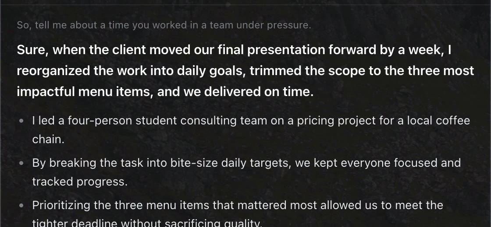
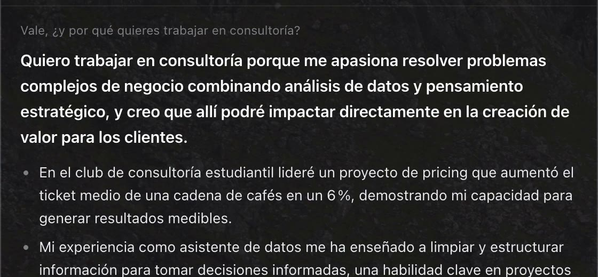
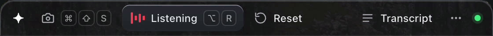

Your profile, nothing made up
You write your studies, experience and real stories in one text file. Questions about you use only those facts. If one is missing, it writes “[your example: …]” instead of inventing it.
Free for Mac · Apple silicon
A small panel for your Mac that listens to a practice interview or a call, writes the question down as it’s said, and suggests what to say, built from your own profile. In English or Spanish, on your own free Groq API key.
A real recording from 11 October 2026: the app on a Mac, with the interviewer’s questions played through the speakers. The answers come from a sample profile (a made-up student), not mine.
It has sound. The interviewer’s voice is the one the app heard, and nothing in the panel is sped up between question and answer.
Four steps, and most of them run while the other person is still talking.
Apple’s dictation, running on the Mac, writes the words down while they’re being said.
After 450 ms of silence, Whisper on Groq rewrites the whole sentence properly in about 0.4 s.
A small filter on the Mac skips sentences that aren’t questions (42% of them in testing), so “can you hear me?” never gets an essay.
One bold sentence you can say out loud, then two to four short points. Under 90 words, from Groq’s gpt-oss-120b.
Measured by the app’s own practice log.
3 practice rounds: 0.65 s, 0.66 s and 0.88 s. That’s a small sample, and a slow connection adds time.

You write your studies, experience and real stories in one text file. Questions about you use only those facts. If one is missing, it writes “[your example: …]” instead of inventing it.

It answers in the language of the question, so you can switch mid-call. Opinion and general questions get a general answer, without dragging your CV in.
The Mac asks out loud
“Walk me through a DCF.”
The Mac reads one of 19 interview questions out loud, in English or Spanish. The app answers, and every round is timed and logged.
The panel says what it’s doing at every moment, so you always know if it heard you.
A case or an exercise on screen? One shortcut sends a screenshot and the answer comes back in the same panel.
I built it to rehearse interviews out loud and to keep up in calls, especially in a second language. It works like notes on your own screen.
If an interview, a test or an exam doesn’t allow outside help, don’t use it there. It’s meant to make you better prepared, not to answer for you.

Signed and notarized by Apple. One installer: double-click, it lands in Applications and opens. Apple silicon, 109 MB. It needs a free Groq API key (console.groq.com/keys): the app asks for it on first launch, and your key and profile stay on your Mac.